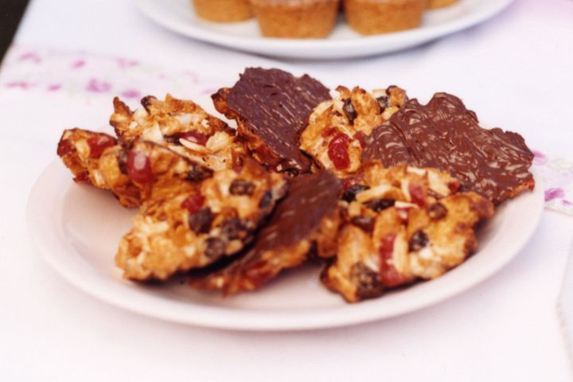

Florentines

Description
Thin, delicate and crispy, these Florentines, also called lace cookies sometimes, are the perfect sweet treat for a fancy afternoon tea and will make a lovely gift for the holidays.
Ingredients
- 1/2 cup sultanas
- 2 cups cornflakes
- 100g slivered almonds
- 100g chopped Coles glace cherries
- 2 tbsp mixed peel
- 2/3 cup sweetened condensed milk
- 250g dark chocolate, finely chopped
Steps
- Preheat the oven to 170°C. Line 2 large baking trays with non-stick baking paper.
- Combine the sultanas, cornflakes, almonds, glace cherries, mixed peel and sweetened condensed milk in a bowl. Place spoonfuls of the mixture on baking trays, leaving enough room between each for biscuits to spread. Bake for 10 minutes until light golden brown, then set aside on a wire rack to cool.
- Melt the dark chocolate in a bowl over a saucepan of simmering water. Set aside to cool slightly then spread over the underside of the florentines. Use a fork to make wiggly lines in the chocolate, then place, chocolate-side up, on a wire rack until set.